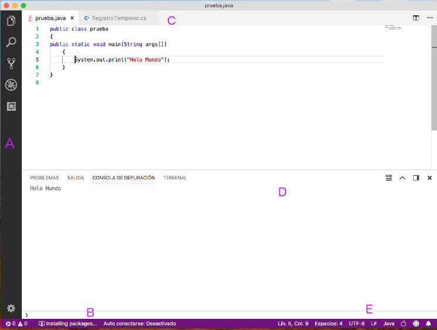

Visual Studio Code
Linux: |
VS Code work environment

Change theme in File > Preferences > Color Theme
VS Code Extensions
|
Exercise
Create a file called Test.java with VS Code and add the following code. Try some word auto completion and keybindings with it. Finally, compile it and run it.
public class Test
{
public static void main(String[] args)
{
System.out.println("Hello");
}
}
Exercise
Create a file called test.c with VS Code and add the following code. Try some word auto completion and keybindings with it. Finally, compile it and run it.
#include
int main()
{
printf("Hello");
return 0;
}